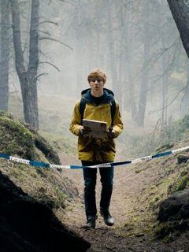

SerialALL
SerialALL - ничего лишнего!
Тьма
Описание сериала "Тьма"

Тьма- новый сериал от Netflix,повествующий о маленьком городке, пропаже людей
таинственным образом.
Перед нами:Провинциальный городок,секретная лаборатория на территории АЭС.
Сериал берет две направления жанров,по ходу событий приумножая и развивая их.Здесь
нашлось место только для триллера и драмы.
В сериале каждая минута хронометража
потрачена не в пустую,каждый персонаж
раскрыт должным образом и имеет достаточно экранного времени для его восприятия и понимая мотивов.Главная идея сюжета очень интересная и
в то же время достаточно сложная для неподготовленного зрителя.На всем протяжении времени сериал не дает никакой разрядки и даже минуты на отдых.
Картинка в сериале мрачная и темная,будто бы время застыло в ожидании дождя которого,кстати, достаточно в сериале.Музыкальное сопровождение,построено на медитативных мелодиях и отлично работает на нагнетание атмосферы.
Если говорить касательно актеров то со своей задачей они справляются,но какой-то шедевральной прям игры не ждите. Актеры для большинства зрителей будут совершенно незнакомыми.
Из минусов стоит выделить как нестранно то, что играет только в плюс сериалу.Парадокс,но именно чрезмерно перегруженный на детали сюжет,а так же история самих персонажей может отпугнуть зрителя. Дело в том, что основные события сериала – это квинтэссенция всех приемов научной фантастики.Да,именно фантастики,а между прочим на фоне нас пытаются погрузить еще к тому же в историю практически каждого персонажа.Все это обусловлено подачей материала.
Но если вы любитель сериалов-головоломок,то это именно то, что вы ищите.
Подводя итог,хочется сказать что «Тьма» это самобытный сериал.Если вам понравились такие фильмы как: Эффект бабочки, связь,интерстеллар и радиоволна – строго рекомендую.Действительно очень качественный и серьезный проект.
Отзывы о сериале
Елена
Отличый сериал, держит в напряжении. Советую.
Аслан
оригинальная, интересная идея, сериал постоянно двигается вперед, отличная режиссерская и операторская работа, много жанров в одном сериале, таинственная атмосфера, прекрасные декорации, отличная музыка, шедевр...
Nastya
Мороз по коже
Меня затянуло на несколько дней безотрывного просмотра. Тот самый случай, когда мурашки начинаются с заставки, и не покидают до конца серии. И за ней следует еще одна, и еще. Просто потому, что невозможно остановиться. Кстати, заставка заслуживает отдельного внимания - музыкальное сопровождение и видеоряд каждый раз вызывали у меня бурю эмоций. Запутанный сюжет с примесью мистики и детектива, колорит небольшого немецкого города, серая и мрачная картинка, гнетущая и даже давящая атмосфера - я ощутила полное погружение в происходящее. Здесь нет ярких спецэффектов, которых мы ждем от фантастики. Но есть нечто большее - ощущение реальности. Каждая серия от начала и до конца держит в напряжении и тревоге, хотя само течение сюжета тягучее и неспешное. Из минусов для меня было только то, что героев слишком много, их истории из настоящего и прошлого настолько переплетены между собой, что порой было сложно уследить за тем, кто из них кто. И хотя есть ощущение некоторой общности с 'Очень странными делами', особенно поначалу,'ОСД' - это скорее страшная сказка, а 'Тьма' для меня оказалась даже более глубокой и поглощающей. 8 из 10